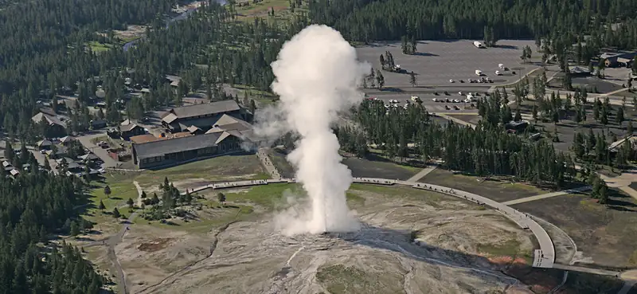
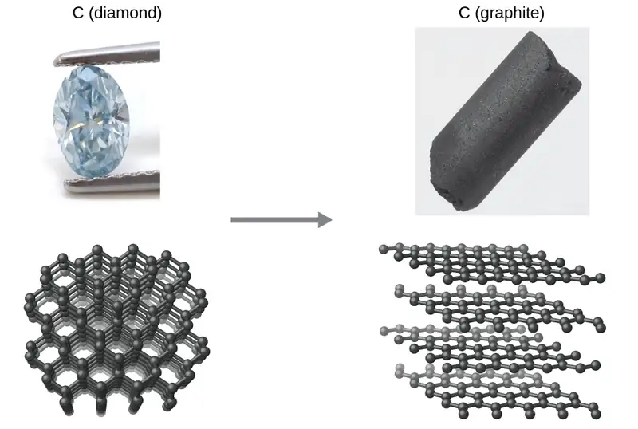
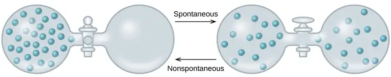
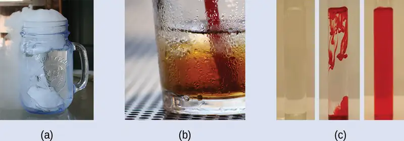
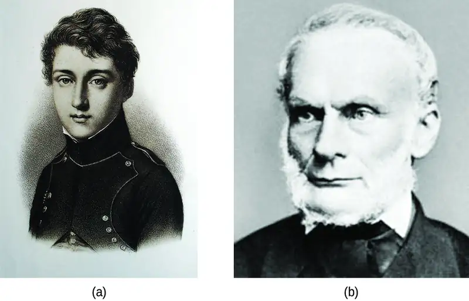

Chapter 16: Thermodynamics¶
Introduction¶
Learning Objectives
- Spontaneity
- Entropy
- The Second and Third Laws of Thermodynamics
- Free Energy

Among the many capabilities of chemistry is its ability to predict if a process will occur under specified conditions. Thermodynamics, the study of relationships between the energy and work associated with chemical and physical processes, provides this predictive ability. Previous chapters in this text have described various applications of thermochemistry, an important aspect of thermodynamics concerned with the heat flow accompanying chemical reactions and phase transitions. This chapter will introduce additional thermodynamic concepts, including those that enable the prediction of any chemical or physical changes under a given set of conditions.
16.1 Spontaneity¶
Learning Objectives
By the end of this section, you will be able to:
- Distinguish between spontaneous and nonspontaneous processes
- Describe the dispersal of matter and energy that accompanies certain spontaneous processes
Processes have a natural tendency to occur in one direction under a given set of conditions. Water will naturally flow downhill, but uphill flow requires outside intervention such as the use of a pump. Iron exposed to the earth’s atmosphere will corrode, but rust is not converted to iron without intentional chemical treatment. A spontaneous process is one that occurs naturally under certain conditions. A nonspontaneous process, on the other hand, will not take place unless it is “driven” by the continual input of energy from an external source. A process that is spontaneous in one direction under a particular set of conditions is nonspontaneous in the reverse direction. At room temperature and typical atmospheric pressure, for example, ice will spontaneously melt, but water will not spontaneously freeze.
The spontaneity of a process is not correlated to the speed of the process. A spontaneous change may be so rapid that it is essentially instantaneous or so slow that it cannot be observed over any practical period of time. To illustrate this concept, consider the decay of radioactive isotopes, a topic more thoroughly treated in the chapter on nuclear chemistry. Radioactive decay is by definition a spontaneous process in which the nuclei of unstable isotopes emit radiation as they are converted to more stable nuclei. All the decay processes occur spontaneously, but the rates at which different isotopes decay vary widely. Technetium-99m is a popular radioisotope for medical imaging studies that undergoes relatively rapid decay and exhibits a half-life of about six hours. Uranium-238 is the most abundant isotope of uranium, and its decay occurs much more slowly, exhibiting a half-life of more than four billion years (Figure 16.2).
![A graph of two lines is shown where the y-axis is labeled, “amount of isotope remaining ( percent sign ),” and has values zero through one hundred, in increments of ten, written along the axis. The x-axis is labeled, “time ( hours )” and has values zero through seven, in increments of one, written along the axis. The first graph, drawn with a blue line, begins at the top left value of one hundred on the y-axis and zero on the x-axis and falls steeply over the first three minutes, then the graphed line becomes almost horizontal until it reaches seven minutes on the x-axis. The second graph, drawn in red, begins at the same point as the first, but remains perfectly horizontal with no change along the y-axis. A legend labels the red line as, 'U dash 238,' and the blue line as, 'T c dash 99 m'.](img/cnx-chem-16-01-decayrates.webp)
As another example, consider the conversion of diamond into graphite (Figure 16.3).
The phase diagram for carbon indicates that graphite is the stable form of this element under ambient atmospheric pressure, while diamond is the stable allotrope at very high pressures, such as those present during its geologic formation. Thermodynamic calculations of the sort described in the last section of this chapter indicate that the conversion of diamond to graphite at ambient pressure occurs spontaneously, yet diamonds are observed to exist, and persist, under these conditions. Though the process is spontaneous under typical ambient conditions, its rate is extremely slow; so, for all practical purposes diamonds are indeed “forever.” Situations such as these emphasize the important distinction between the thermodynamic and the kinetic aspects of a process. In this particular case, diamonds are said to be thermodynamically unstable but kinetically stable under ambient conditions.

Dispersal of Matter and Energy¶
Extending the discussion of thermodynamic concepts toward the objective of predicting spontaneity, consider now an isolated system consisting of two flasks connected with a closed valve. Initially there is an ideal gas in one flask and the other flask is empty (P = 0). (Figure 16.4). When the valve is opened, the gas spontaneously expands to fill both flasks equally. Recalling the definition of pressure-volume work from the chapter on thermochemistry, note that no work has been done because the pressure in a vacuum is zero.
Note as well that since the system is isolated, no heat has been exchanged with the surroundings (q = 0). The first law of thermodynamics confirms that there has been no change in the system’s internal energy as a result of this process.
The spontaneity of this process is therefore not a consequence of any change in energy that accompanies the process. Instead, the driving force appears to be related to the greater, more uniform dispersal of matter that results when the gas is allowed to expand. Initially, the system was comprised of one flask containing matter and another flask containing nothing. After the spontaneous expansion took place, the matter was distributed both more widely (occupying twice its original volume) and more uniformly (present in equal amounts in each flask).

Now consider two objects at different temperatures: object X at temperature TX and object Y at temperature TY, with TX > TY (Figure 16.5). When these objects come into contact, heat spontaneously flows from the hotter object (X) to the colder one (Y). This corresponds to a loss of thermal energy by X and a gain of thermal energy by Y.
From the perspective of this two-object system, there was no net gain or loss of thermal energy, rather the available thermal energy was redistributed among the two objects. This spontaneous process resulted in a more uniform dispersal of energy.
![Two diagrams are shown. The left diagram is comprised of two separated squares; the left is red and labeled “X” and the right is blue and labeled “Y.” Below this diagram is the label “T subscript X, a greater than sign, T subscript Y.” The right diagram shows the boxes next to one another, shaded red on the left, blue on the right, and blended red and blue together in the middle. The left box is red and labeled “X,” the right is blue and labeled “Y” and a right-facing arrow labeled “Heat” is written above them. Below this diagram is the label “X and Y in contact.](img/cnx-chem-16-02-temperature.webp)
As illustrated by the two processes described, an important factor in determining the spontaneity of a process is the extent to which it changes the dispersal or distribution of matter and/or energy. In each case, a spontaneous process took place that resulted in a more uniform distribution of matter or energy.
Example 16.1 Redistribution of Matter during a Spontaneous Process
Describe how matter is redistributed when the following spontaneous processes take place:
(a) A solid sublimes.
(b) A gas condenses.
(c) A drop of food coloring added to a glass of water forms a solution with uniform color.
Solution

(a) Sublimation is the conversion of a solid (relatively high density) to a gas (much lesser density). This process yields a much greater dispersal of matter, since the molecules will occupy a much greater volume after the solid-to-gas transition.
(b) Condensation is the conversion of a gas (relatively low density) to a liquid (much greater density). This process yields a much lesser dispersal of matter, since the molecules will occupy a much lesser volume after the gas-to-liquid transition.
(c) The process in question is diffusion. This process yields a more uniform dispersal of matter, since the initial state of the system involves two regions of different dye concentrations (high in the drop of dye, zero in the water), and the final state of the system contains a single dye concentration throughout.
Check Your Learning
Describe how energy is redistributed when a spoon at room temperature is placed in a cup of hot coffee.
Answer:
Heat will spontaneously flow from the hotter object (coffee) to the colder object (spoon), resulting in a more uniform distribution of thermal energy as the spoon warms and the coffee cools.
16.2 Entropy¶
Learning Objectives
By the end of this section, you will be able to:
- Define entropy
- Explain the relationship between entropy and the number of microstates
- Predict the sign of the entropy change for chemical and physical processes
In 1824, at the age of 28, Nicolas Léonard Sadi Carnot (Figure 16.7) published the results of an extensive study regarding the efficiency of steam heat engines. A later review of Carnot’s findings by Rudolf Clausius introduced a new thermodynamic property that relates the spontaneous heat flow accompanying a process to the temperature at which the process takes place. This new property was expressed as the ratio of the reversible heat (qrev) and the kelvin temperature (T). In thermodynamics, a reversible process is one that takes place at such a slow rate that it is always at equilibrium and its direction can be changed (it can be “reversed”) by an infinitesimally small change in some condition. Note that the idea of a reversible process is a formalism required to support the development of various thermodynamic concepts; no real processes are truly reversible, rather they are classified as irreversible.

Similar to other thermodynamic properties, this new quantity is a state function, so its change depends only upon the initial and final states of a system. In 1865, Clausius named this property entropy (S) and defined its change for any process as the following:
The entropy change for a real, irreversible process is then equal to that for the theoretical reversible process that involves the same initial and final states.
Entropy and Microstates¶
Following the work of Carnot and Clausius, Ludwig Boltzmann developed a molecular-scale statistical model that related the entropy of a system to the number of microstates (W) possible for the system. A microstate is a specific configuration of all the locations and energies of the atoms or molecules that make up a system. The relation between a system’s entropy and the number of possible microstates is
where k is the Boltzmann constant, 1.38 \(\times\) 10−23 J/K.
As for other state functions, the change in entropy for a process is the difference between its final (Sf) and initial (Si) values:
For processes involving an increase in the number of microstates, Wf > Wi, the entropy of the system increases and ΔS > 0. Conversely, processes that reduce the number of microstates, Wf < Wi, yield a decrease in system entropy, ΔS < 0. This molecular-scale interpretation of entropy provides a link to the probability that a process will occur as illustrated in the next paragraphs.
Consider the general case of a system comprised of N particles distributed among n boxes. The number of microstates possible for such a system is nN. For example, distributing four particles among two boxes will result in 24 = 16 different microstates as illustrated in Figure 16.8. Microstates with equivalent particle arrangements (not considering individual particle identities) are grouped together and are called distributions. The probability that a system will exist with its components in a given distribution is proportional to the number of microstates within the distribution. Since entropy increases logarithmically with the number of microstates, the most probable distribution is therefore the one of greatest entropy.
![Five rows of diagrams that look like dominoes are shown and labeled a, b, c, d, and e. Row a has one “domino” that has four dots on the left side, red, green, blue and yellow in a clockwise pattern from the top left, and no dots on the right. Row b has four “dominos,” each with three dots on the left and one dot on the right. The first shows a “domino” with green, yellow and blue on the left and red on the right. The second “domino” has yellow, blue and red on the left and green on the right. The third “domino” has red, green and yellow on the left and blue on the right while the fourth has red, green and blue on the left and yellow on the right. Row c has six “dominos”, each with two dots on either side. The first has a red and green on the left and a blue and yellow on the right. The second has a red and blue on the left and a green and yellow on the right while the third has a yellow and red on the left and a green and blue on the right. The fourth has a green and blue on the left and a red and yellow on the right. The fifth has a green and yellow on the left and a red and blue on the right. The sixth has a blue and yellow on the left and a green and red on the right. Row d has four “dominos,” each with one dot on the left and three on the right. The first “domino” has red on the left and a blue, green and yellow on the right. The second has a green on the left and a red, yellow and blue on the right. The third has a blue on the left and a red, green and yellow on the right. The fourth has a yellow on the left and a red, green and blue on the right. Row e has 1 “domino” with no dots on the left and four dots on the right that are red, green, blue and yellow.](img/cnx-chem-16-02-microstates.webp)
For this system, the most probable configuration is one of the six microstates associated with distribution (c) where the particles are evenly distributed between the boxes, that is, a configuration of two particles in each box. The probability of finding the system in this configuration is \(\frac{6}{16}\) or \(\frac{3}{8}.\) The least probable configuration of the system is one in which all four particles are in one box, corresponding to distributions (a) and (e), each with a probability of \(\frac{1}{16}.\) The probability of finding all particles in only one box (either the left box or right box) is then \(\left( \frac{1}{16}\:+\:\frac{1}{16} \right)\:=\:\frac{2}{16}\) or \(\frac{1}{8}.\)
As you add more particles to the system, the number of possible microstates increases exponentially (2N). A macroscopic (laboratory-sized) system would typically consist of moles of particles (N ~ 1023), and the corresponding number of microstates would be staggeringly huge. Regardless of the number of particles in the system, however, the distributions in which roughly equal numbers of particles are found in each box are always the most probable configurations.
This matter dispersal model of entropy is often described qualitatively in terms of the disorder of the system. By this description, microstates in which all the particles are in a single box are the most ordered, thus possessing the least entropy. Microstates in which the particles are more evenly distributed among the boxes are more disordered, possessing greater entropy.
The previous description of an ideal gas expanding into a vacuum (Figure 16.4) is a macroscopic example of this particle-in-a-box model. For this system, the most probable distribution is confirmed to be the one in which the matter is most uniformly dispersed or distributed between the two flasks. Initially, the gas molecules are confined to just one of the two flasks. Opening the valve between the flasks increases the volume available to the gas molecules and, correspondingly, the number of microstates possible for the system. Since Wf > Wi, the expansion process involves an increase in entropy (ΔS > 0) and is spontaneous.
A similar approach may be used to describe the spontaneous flow of heat. Consider a system consisting of two objects, each containing two particles, and two units of thermal energy (represented as “*”) in Figure 16.9. The hot object is comprised of particles A and B and initially contains both energy units. The cold object is comprised of particles C and D, which initially has no energy units. Distribution (a) shows the three microstates possible for the initial state of the system, with both units of energy contained within the hot object. If one of the two energy units is transferred, the result is distribution (b) consisting of four microstates. If both energy units are transferred, the result is distribution (c) consisting of three microstates. Thus, we may describe this system by a total of ten microstates. The probability that the heat does not flow when the two objects are brought into contact, that is, that the system remains in distribution (a), is \(\frac{3}{10}.\) More likely is the flow of heat to yield one of the other two distribution, the combined probability being \(\frac{7}{10}.\) The most likely result is the flow of heat to yield the uniform dispersal of energy represented by distribution (b), the probability of this configuration being \(\frac{4}{10}.\) This supports the common observation that placing hot and cold objects in contact results in spontaneous heat flow that ultimately equalizes the objects’ temperatures. And, again, this spontaneous process is also characterized by an increase in system entropy.
![Three rows labeled a, b, and c are shown and each contains rectangles with two sides where the left side is labeled, “A,” and “B,” and the right is labeled, “C,” and “D.” Row a has three rectangles where the first has a dot above and below the letter A, the second has a dot above the A and B, and the third which has a dot above and below the letter B. Row b has four rectangles; the first has a dot above A and C, the second has a dot above A and D, the third has a dot above B and C and the fourth has a dot above B and D. Row c has three rectangles; the first has a dot above and below the letter C, the second has a dot above C and D and the third has a dot above and below the letter D.](img/cnx-chem-16-03-energy.webp)
Example 16.2 Determination of ΔS
Calculate the change in entropy for the process depicted below.
![A diagram shows one rectangle with two sides that has four dots, red, green, yellow and blue written on the left side. A right-facing arrow leads to six more two-sided rectangles, each with two dots on the left and right sides. The first rectangle has a red and green dot on the left and a blue and yellow on the right, while the second shows a red and blue on the left and a green and yellow on the right. The third rectangle has a red and yellow dot on the left and a blue and green on the right, while the fourth shows a green and blue on the left and a red and yellow on the right. The fifth rectangle has a yellow and green dot on the left and a blue and red on the right, while the sixth shows a yellow and blue on the left and a green and red on the right.](img/cnx-chem-16-03-matter-img.webp)
Solution
The initial number of microstates is one, the final six:
The sign of this result is consistent with expectation; since there are more microstates possible for the final state than for the initial state, the change in entropy should be positive.
Check Your Learning
Consider the system shown in Figure 16.9. What is the change in entropy for the process where all the energy is transferred from the hot object (AB) to the cold object (CD)?
Answer:
0 J/K
Predicting the Sign of ΔS¶
The relationships between entropy, microstates, and matter/energy dispersal described previously allow us to make generalizations regarding the relative entropies of substances and to predict the sign of entropy changes for chemical and physical processes. Consider the phase changes illustrated in Figure 16.10. In the solid phase, the atoms or molecules are restricted to nearly fixed positions with respect to each other and are capable of only modest oscillations about these positions. With essentially fixed locations for the system’s component particles, the number of microstates is relatively small. In the liquid phase, the atoms or molecules are free to move over and around each other, though they remain in relatively close proximity to one another. This increased freedom of motion results in a greater variation in possible particle locations, so the number of microstates is correspondingly greater than for the solid. As a result, Sliquid > Ssolid and the process of converting a substance from solid to liquid (melting) is characterized by an increase in entropy, ΔS > 0. By the same logic, the reciprocal process (freezing) exhibits a decrease in entropy, ΔS < 0.
![Three stoppered flasks are shown with right and left-facing arrows in between each; the first is labeled above as, “delta S greater than 0,” and below as, “delta S less than 0,” while the second is labeled above as, “delta S greater than 0,” and below as, “delta S less than 0.” A long, right-facing arrow is drawn above all the flasks and labeled, “Increasing entropy.” The left flask contains twenty-seven particles arranged in a cube in the bottom of the flask and is labeled, “Crystalline solid,” below. The middle flask contains twenty-seven particles dispersed randomly in the bottom of the flask and is labeled, “Liquid,” below. The right flask contains twenty-seven particles dispersed inside of the flask and moving rapidly and is labeled, “Gas,” below.](img/cnx-chem-16-03-entropies.webp)
Now consider the gaseous phase, in which a given number of atoms or molecules occupy a much greater volume than in the liquid phase. Each atom or molecule can be found in many more locations, corresponding to a much greater number of microstates. Consequently, for any substance, Sgas > Sliquid > Ssolid, and the processes of vaporization and sublimation likewise involve increases in entropy, ΔS > 0. Likewise, the reciprocal phase transitions, condensation and deposition, involve decreases in entropy, ΔS < 0.
According to kinetic-molecular theory, the temperature of a substance is proportional to the average kinetic energy of its particles. Raising the temperature of a substance will result in more extensive vibrations of the particles in solids and more rapid translations of the particles in liquids and gases. At higher temperatures, the distribution of kinetic energies among the atoms or molecules of the substance is also broader (more dispersed) than at lower temperatures. Thus, the entropy for any substance increases with temperature (Figure 16.11).
![Two graphs are shown. The y-axis of the left graph is labeled, “Fraction of molecules,” while the x-axis is labeled, “Velocity, v ( m / s ),” and has values of 0 through 1,500 along the axis with increments of 500. Four lines are plotted on this graph. The first, labeled, “100 K,” peaks around 200 m / s while the second, labeled, “200 K,” peaks near 300 m / s and is slightly lower on the y-axis than the first. The third line, labeled, “500 K,” peaks around 550 m / s and is lower than the first two on the y-axis. The fourth line, labeled, “1000 K,” peaks around 750 m / s and is the lowest of the four on the y-axis. Each line get increasingly broad. The second graph has a y-axis labeled, “Entropy, S,” with an upward-facing arrow and an x-axis labeled, “Temperature ( K ),” and a right-facing arrow. The graph has three equally spaced columns in the background, labeled, “Solid,” “Liquid,” and, “Gas,” from left to right. A line extends slightly upward through the first column in a slight upward direction, then goes straight up in the transition between the first two columns. In then progresses in a slight upward direction through the second column, then goes up dramatically between the second and third columns, then continues in a slight upward direction once more. The first vertical region of this line is labeled, “Melting,” and the second is labeled, “Boiling.”](img/cnx-chem-16-02-entgraph.webp)
Link to Learning
Use interactive simulator to visualize the dependence of particle location and freedom of motion on physical state and temperature for several different atoms and molecules.
The entropy of a substance is influenced by the structure of the particles (atoms or molecules) that comprise the substance. With regard to atomic substances, heavier atoms possess greater entropy at a given temperature than lighter atoms, which is a consequence of the relation between a particle’s mass and the spacing of quantized translational energy levels (a topic beyond the scope of this text). For molecules, greater numbers of atoms increase the number of ways in which the molecules can vibrate and thus the number of possible microstates and the entropy of the system.
Finally, variations in the types of particles affects the entropy of a system. Compared to a pure substance, in which all particles are identical, the entropy of a mixture of two or more different particle types is greater. This is because of the additional orientations and interactions that are possible in a system comprised of nonidentical components. For example, when a solid dissolves in a liquid, the particles of the solid experience both a greater freedom of motion and additional interactions with the solvent particles. This corresponds to a more uniform dispersal of matter and energy and a greater number of microstates. The process of dissolution therefore involves an increase in entropy, ΔS > 0.
Considering the various factors that affect entropy allows us to make informed predictions of the sign of ΔS for various chemical and physical processes as illustrated in Example 16.3.
Example 16.3 Predicting the Sign of ∆S
Predict the sign of the entropy change for the following processes. Indicate the reason for each of your predictions.
(a) One mole liquid water at room temperature \(\longrightarrow\) one mole liquid water at 50 °C
(b) \(\text{Ag}^{\text{+}}(aq)+\text{Cl}^{-}(aq)\:\longrightarrow\:\text{AgCl}(s)\)
(c) \(\text{C}_{6}\text{H}_{6}(l)+\frac{15}{2}\text{O}_{2}(g)\:\longrightarrow\:6\text{CO}_{2}(g)+3\text{H}_{2}\text{O}(l)\)
(d) \(\text{NH}_{3}(s)\:\longrightarrow\:\text{NH}_{3}(l)\)
Solution
(a) positive, temperature increases
(b) negative, reduction in the number of ions (particles) in solution, decreased dispersal of matter
(c) negative, net decrease in the amount of gaseous species
(d) positive, phase transition from solid to liquid, net increase in dispersal of matter
Check Your Learning
Predict the sign of the entropy change for the following processes. Give a reason for your prediction.
(a) \(\text{NaNO}_{3}(s)\:\longrightarrow\:\text{Na}^{\text{+}}(aq)+\text{NO}_{3}{}^{-}(aq)\)
(b) the freezing of liquid water
(c) \(\text{CO}_{2}(s)\:\longrightarrow\:\text{CO}_{2}(g)\)
(d) \(\text{CaCO}_{3}(s)\:\longrightarrow\:\text{CaO}(s)+\text{CO}_{2}(g)\)
Answer:
(a) Positive; The solid dissolves to give an increase of mobile ions in solution. (b) Negative; The liquid becomes a more ordered solid. (c) Positive; The relatively ordered solid becomes a gas. (d) Positive; There is a net increase in the amount of gaseous species.
16.3 The Second and Third Laws of Thermodynamics¶
Learning Objectives
By the end of this section, you will be able to:
- State and explain the second and third laws of thermodynamics
- Calculate entropy changes for phase transitions and chemical reactions under standard conditions
The Second Law of Thermodynamics¶
In the quest to identify a property that may reliably predict the spontaneity of a process, a promising candidate has been identified: entropy. Processes that involve an increase in entropy of the system (ΔS > 0) are very often spontaneous; however, examples to the contrary are plentiful. By expanding consideration of entropy changes to include the surroundings, we may reach a significant conclusion regarding the relation between this property and spontaneity. In thermodynamic models, the system and surroundings comprise everything, that is, the universe, and so the following is true:
To illustrate this relation, consider again the process of heat flow between two objects, one identified as the system and the other as the surroundings. There are three possibilities for such a process:
-
The objects are at different temperatures, and heat flows from the hotter to the cooler object. This is always observed to occur spontaneously. Designating the hotter object as the system and invoking the definition of entropy yields the following:
\[ \Delta S_{\text{sys}}=\:\frac{-q_{\text{rev}}}{T_{\text{sys}}}\hspace{2.0em}\text{and}\hspace{2.0em}\Delta S_{\text{surr}}=\:\frac{q_{\text{rev}}}{T_{\text{surr}}} \]The magnitudes of −qrev and qrev are equal, their opposite arithmetic signs denoting loss of heat by the system and gain of heat by the surroundings. Since Tsys > Tsurr in this scenario, the entropy decrease of the system will be less than the entropy increase of the surroundings, and so the entropy of the universe will increase:
\[ \begin{array}{l} |\Delta S_{\text{sys}}| \lt |\Delta S_{\text{surr}}| \\ \Delta S_{\text{univ}}=\Delta S_{\text{sys}}+\Delta S_{\text{surr}} \gt 0 \end{array} \] -
The objects are at different temperatures, and heat flows from the cooler to the hotter object. This is never observed to occur spontaneously. Again designating the hotter object as the system and invoking the definition of entropy yields the following:
\[ \Delta S_{\text{sys}}=\:\frac{q_{\text{rev}}}{T_{\text{sys}}}\hspace{2.0em}\text{and}\hspace{2.0em}\Delta S_{\text{surr}}=\:\frac{-q_{\text{rev}}}{T_{\text{surr}}} \]The arithmetic signs of qrev denote the gain of heat by the system and the loss of heat by the surroundings. The magnitude of the entropy change for the surroundings will again be greater than that for the system, but in this case, the signs of the heat changes (that is, the direction of the heat flow) will yield a negative value for ΔSuniv. This process involves a decrease in the entropy of the universe.
-
The objects are at essentially the same temperature, Tsys ≈ Tsurr, and so the magnitudes of the entropy changes are essentially the same for both the system and the surroundings. In this case, the entropy change of the universe is zero, and the system is at equilibrium.
\[ \begin{array}{l} |\Delta S_{\text{sys}}|\approx|\Delta S_{\text{surr}}| \\ \Delta S_{\text{univ}}=\Delta S_{\text{sys}}+\Delta S_{\text{surr}}=0 \end{array} \]
These results lead to a profound statement regarding the relation between entropy and spontaneity known as the second law of thermodynamics: all spontaneous changes cause an increase in the entropy of the universe. A summary of these three relations is provided in Table 16.1.
Table 16.1
| The Second Law of Thermodynamics | |
|---|---|
| ΔSuniv > 0 | spontaneous |
| ΔSuniv < 0 | nonspontaneous (spontaneous in opposite direction) |
| ΔSuniv = 0 | at equilibrium |
For many realistic applications, the surroundings are vast in comparison to the system. In such cases, the heat gained or lost by the surroundings as a result of some process represents a very small, nearly infinitesimal, fraction of its total thermal energy. For example, combustion of a fuel in air involves transfer of heat from a system (the fuel and oxygen molecules undergoing reaction) to surroundings that are infinitely more massive (the earth’s atmosphere). As a result, qsurr is a good approximation of qrev, and the second law may be stated as the following:
We may use this equation to predict the spontaneity of a process as illustrated in Example 16.4.
Example 16.4 Will Ice Spontaneously Melt?
The entropy change for the process
is 22.1 J/K and requires that the surroundings transfer 6.00 kJ of heat to the system. Is the process spontaneous at −10.00 °C? Is it spontaneous at +10.00 °C?
Solution
We can assess the spontaneity of the process by calculating the entropy change of the universe. If ΔSuniv is positive, then the process is spontaneous. At both temperatures, ΔSsys = 22.1 J/K and qsurr = −6.00 kJ.
At −10.00 °C (263.15 K), the following is true:
Suniv < 0, so melting is nonspontaneous (not spontaneous) at −10.0 °C.
At 10.00 °C (283.15 K), the following is true:
Suniv > 0, so melting is spontaneous at 10.00 °C.
Check Your Learning
Using this information, determine if liquid water will spontaneously freeze at the same temperatures. What can you say about the values of Suniv?
Answer:
Entropy is a state function, so ΔSfreezing = −ΔSmelting = −22.1 J/K and qsurr = +6.00 kJ. At −10.00 °C spontaneous, +0.7 J/K; at +10.00 °C nonspontaneous, −0.9 J/K.
The Third Law of Thermodynamics¶
The previous section described the various contributions of matter and energy dispersal that contribute to the entropy of a system. With these contributions in mind, consider the entropy of a pure, perfectly crystalline solid possessing no kinetic energy (that is, at a temperature of absolute zero, 0 K). This system may be described by a single microstate, as its purity, perfect crystallinity and complete lack of motion means there is but one possible location for each identical atom or molecule comprising the crystal (W = 1). According to the Boltzmann equation, the entropy of this system is zero.
This limiting condition for a system’s entropy represents the third law of thermodynamics: the entropy of a pure, perfect crystalline substance at 0 K is zero.
Careful calorimetric measurements can be made to determine the temperature dependence of a substance’s entropy and to derive absolute entropy values under specific conditions. Standard entropies (S°) are for one mole of substance under standard conditions (a pressure of 1 bar and a temperature of 298.15 K; see details regarding standard conditions in the thermochemistry chapter of this text). The standard entropy change (ΔS°) for a reaction may be computed using standard entropies as shown below:
where ν represents stoichiometric coefficients in the balanced equation representing the process. For example, ΔS° for the following reaction at room temperature
is computed as:
A partial listing of standard entropies is provided in Table 16.2, and additional values are provided in Appendix G. The example exercises that follow demonstrate the use of S° values in calculating standard entropy changes for physical and chemical processes.
Table 16.2 Standard entropies for selected substances measured at 1 atm and 298.15 K. (Values are approximately equal to those measured at 1 bar, the currently accepted standard state pressure.)
| Substance | \(S{}^{\circ}\) (J mol−1 K−1) |
| carbon | |
| C(s, graphite) | 5.740 |
| C(s, diamond) | 2.38 |
| CO(g) | 197.7 |
| CO2(g) | 213.8 |
| CH4(g) | 186.3 |
| C2H4(g) | 219.3 |
| C2H6(g) | 229.2 |
| CH3OH(l) | 126.8 |
| C2H5OH(l) | 160.7 |
| hydrogen | |
| H2(g) | 130.7 |
| H(g) | 114.7 |
| H2O(g) | 188.8 |
| H2O(l) | 70.0 |
| HCI(g) | 186.8 |
| H2S(g) | 205.7 |
| oxygen | |
| O2(g) | 205.2 |
Example 16.5 Determination of ΔS°
Calculate the standard entropy change for the following process:
Solution
Calculate the entropy change using standard entropies as shown above:
The value for ΔS° is negative, as expected for this phase transition (condensation), which the previous section discussed.
Check Your Learning
Calculate the standard entropy change for the following process:
Answer:
−120.6 J K–1 mol–1
Example 16.6 Determination of ΔS°
Calculate the standard entropy change for the combustion of methanol, CH3OH:
Solution
Calculate the entropy change using standard entropies as shown above:
Check Your Learning
Calculate the standard entropy change for the following reaction:
Answer:
24.7 J/K
16.4 Free Energy¶
Learning Objectives
By the end of this section, you will be able to:
- Define Gibbs free energy, and describe its relation to spontaneity
- Calculate free energy change for a process using free energies of formation for its reactants and products
- Calculate free energy change for a process using enthalpies of formation and the entropies for its reactants and products
- Explain how temperature affects the spontaneity of some processes
- Relate standard free energy changes to equilibrium constants
One of the challenges of using the second law of thermodynamics to determine if a process is spontaneous is that it requires measurements of the entropy change for the system and the entropy change for the surroundings. An alternative approach involving a new thermodynamic property defined in terms of system properties only was introduced in the late nineteenth century by American mathematician Josiah Willard Gibbs. This new property is called the Gibbs free energy (G) (or simply the free energy), and it is defined in terms of a system’s enthalpy and entropy as the following:
Free energy is a state function, and at constant temperature and pressure, the free energy change (ΔG) may be expressed as the following:
(For simplicity’s sake, the subscript “sys” will be omitted henceforth.)
The relationship between this system property and the spontaneity of a process may be understood by recalling the previously derived second law expression:
The first law requires that qsurr = −qsys, and at constant pressure qsys = ΔH, so this expression may be rewritten as:
Multiplying both sides of this equation by −T, and rearranging yields the following:
Comparing this equation to the previous one for free energy change shows the following relation:
The free energy change is therefore a reliable indicator of the spontaneity of a process, being directly related to the previously identified spontaneity indicator, ΔSuniv. Table 16.3 summarizes the relation between the spontaneity of a process and the arithmetic signs of these indicators.
Table 16.3
| Relation between Process Spontaneity and Signs of Thermodynamic Properties | ||
|---|---|---|
| ΔSuniv > 0 | ΔG < 0 | spontaneous |
| ΔSuniv < 0 | ΔG > 0 | nonspontaneous |
| ΔSuniv = 0 | ΔG = 0 | at equilibrium |
What’s “Free” about ΔG?¶
In addition to indicating spontaneity, the free energy change also provides information regarding the amount of useful work (w) that may be accomplished by a spontaneous process. Although a rigorous treatment of this subject is beyond the scope of an introductory chemistry text, a brief discussion is helpful for gaining a better perspective on this important thermodynamic property.
For this purpose, consider a spontaneous, exothermic process that involves a decrease in entropy. The free energy, as defined by
may be interpreted as representing the difference between the energy produced by the process, ΔH, and the energy lost to the surroundings, TΔS. The difference between the energy produced and the energy lost is the energy available (or “free”) to do useful work by the process, ΔG. If the process somehow could be made to take place under conditions of thermodynamic reversibility, the amount of work that could be done would be maximal:
where \(w_{\max}\) refers to all types of work except expansion (pressure-volume) work.
However, as noted previously in this chapter, such conditions are not realistic. In addition, the technologies used to extract work from a spontaneous process (e.g., batteries) are never 100% efficient, and so the work done by these processes is always less than the theoretical maximum. Similar reasoning may be applied to a nonspontaneous process, for which the free energy change represents the minimum amount of work that must be done on the system to carry out the process.
Calculating Free Energy Change¶
Free energy is a state function, so its value depends only on the conditions of the initial and final states of the system. A convenient and common approach to the calculation of free energy changes for physical and chemical reactions is by use of widely available compilations of standard state thermodynamic data. One method involves the use of standard enthalpies and entropies to compute standard free energy changes, ΔG°, according to the following relation.
Example 16.7 Using Standard Enthalpy and Entropy Changes to Calculate ΔG°
Use standard enthalpy and entropy data from Appendix G to calculate the standard free energy change for the vaporization of water at room temperature (298 K). What does the computed value for ΔG° say about the spontaneity of this process?
Solution
The process of interest is the following:
The standard change in free energy may be calculated using the following equation:
From Appendix G:
| Substance | \(\Delta H_{\text{f}}^{{}^{\circ}}\text{(kJ/mol)}\) | \(S{}^{\circ}\text{(J/K·mol)}\) |
|---|---|---|
| H2O(l) | −285.83 | 70.0 |
| H2O(g) | −241.82 | 188.8 |
Using the appendix data to calculate the standard enthalpy and entropy changes yields:
Substitution into the standard free energy equation yields:
At 298 K (25 °C) \(\Delta G{}^{\circ} \gt 0,\) so boiling is nonspontaneous (not spontaneous).
Check Your Learning
Use standard enthalpy and entropy data from Appendix G to calculate the standard free energy change for the reaction shown here (298 K). What does the computed value for ΔG° say about the spontaneity of this process?
Answer:
\(\Delta G{}^{\circ}=\text{102.0 kJ/mol};\) the reaction is nonspontaneous (not spontaneous) at 25 °C.
The standard free energy change for a reaction may also be calculated from standard free energy of formation ΔGf° values of the reactants and products involved in the reaction. The standard free energy of formation is the free energy change that accompanies the formation of one mole of a substance from its elements in their standard states. Similar to the standard enthalpy of formation, \(\Delta G_{\text{f}}^{{}^{\circ}}\) is by definition zero for elemental substances in their standard states. The approach used to calculate \(\Delta G^{\circ}\) for a reaction from \(\Delta G_{\text{f}}^{{}^{\circ}}\) values is the same as that demonstrated previously for enthalpy and entropy changes. For the reaction
the standard free energy change at room temperature may be calculated as
Example 16.8 Using Standard Free Energies of Formation to Calculate ΔG°
Consider the decomposition of yellow mercury(II) oxide.
Calculate the standard free energy change at room temperature, \(\Delta G{}^{\circ},\) using (a) standard free energies of formation and (b) standard enthalpies of formation and standard entropies. Do the results indicate the reaction to be spontaneous or nonspontaneous under standard conditions?
Solution
The required data are available in Appendix G and are shown here.
| Compound | \(\Delta G_{\text{f}}^{{}^{\circ}}\:\text{(kJ/mol)}\) | \(\Delta H_{\text{f}}^{{}^{\circ}}\:\text{(kJ/mol)}\) | \(S{}^{\circ}\:\text{(J/K·mol)}\) |
|---|---|---|---|
| HgO (s, yellow) | −58.43 | −90.46 | 71.13 |
| Hg(l) | 0 | 0 | 75.9 |
| O2(g) | 0 | 0 | 205.2 |
(a) Using free energies of formation:
(b) Using enthalpies and entropies of formation:
Both ways to calculate the standard free energy change at 25 °C give the same numerical value (to three significant figures), and both predict that the process is nonspontaneous (not spontaneous) at room temperature.
Check Your Learning
Calculate ΔG° using (a) free energies of formation and (b) enthalpies of formation and entropies (Appendix G). Do the results indicate the reaction to be spontaneous or nonspontaneous at 25 °C?
Answer:
(a) 140.8 kJ/mol, nonspontaneous
(b) 141.5 kJ/mol, nonspontaneous
Free Energy Changes for Coupled Reactions¶
The use of free energies of formation to compute free energy changes for reactions as described above is possible because G is a state function, and the approach is analogous to the use of Hess’ Law in computing enthalpy changes (see the chapter on thermochemistry). Consider the vaporization of water as an example:
An equation representing this process may be derived by adding the formation reactions for the two phases of water (necessarily reversing the reaction for the liquid phase). The free energy change for the sum reaction is the sum of free energy changes for the two added reactions:
This approach may also be used in cases where a nonspontaneous reaction is enabled by coupling it to a spontaneous reaction. For example, the production of elemental zinc from zinc sulfide is thermodynamically unfavorable, as indicated by a positive value for ΔG°:
The industrial process for production of zinc from sulfidic ores involves coupling this decomposition reaction to the thermodynamically favorable oxidation of sulfur:
The coupled reaction exhibits a negative free energy change and is spontaneous:
This process is typically carried out at elevated temperatures, so this result obtained using standard free energy values is just an estimate. The gist of the calculation, however, holds true.
Example 16.9 Calculating Free Energy Change for a Coupled Reaction
Is a reaction coupling the decomposition of ZnS to the formation of H2S expected to be spontaneous under standard conditions?
Solution
Following the approach outlined above and using free energy values from Appendix G:
The coupled reaction exhibits a positive free energy change and is thus nonspontaneous.
Check Your Learning
What is the standard free energy change for the reaction below? Is the reaction expected to be spontaneous under standard conditions?
Answer:
−199.7 kJ; spontaneous
Temperature Dependence of Spontaneity¶
As was previously demonstrated in this chapter’s section on entropy, the spontaneity of a process may depend upon the temperature of the system. Phase transitions, for example, will proceed spontaneously in one direction or the other depending upon the temperature of the substance in question. Likewise, some chemical reactions can also exhibit temperature dependent spontaneities. To illustrate this concept, the equation relating free energy change to the enthalpy and entropy changes for the process is considered:
The spontaneity of a process, as reflected in the arithmetic sign of its free energy change, is then determined by the signs of the enthalpy and entropy changes and, in some cases, the absolute temperature. Since T is the absolute (kelvin) temperature, it can only have positive values. Four possibilities therefore exist with regard to the signs of the enthalpy and entropy changes:
- Both ΔH and ΔS are positive. This condition describes an endothermic process that involves an increase in system entropy. In this case, ΔG will be negative if the magnitude of the TΔS term is greater than ΔH. If the TΔS term is less than ΔH, the free energy change will be positive. Such a process is spontaneous at high temperatures and nonspontaneous at low temperatures.
- Both ΔH and ΔS are negative. This condition describes an exothermic process that involves a decrease in system entropy. In this case, ΔG will be negative if the magnitude of the TΔS term is less than ΔH. If the TΔS term’s magnitude is greater than ΔH, the free energy change will be positive. Such a process is spontaneous at low temperatures and nonspontaneous at high temperatures.
- ΔH is positive and ΔS is negative. This condition describes an endothermic process that involves a decrease in system entropy. In this case, ΔG will be positive regardless of the temperature. Such a process is nonspontaneous at all temperatures.
- ΔH is negative and ΔS is positive. This condition describes an exothermic process that involves an increase in system entropy. In this case, ΔG will be negative regardless of the temperature. Such a process is spontaneous at all temperatures.
These four scenarios are summarized in Figure 16.12.
![A table with three columns and four rows is shown. The first column has the phrase, “Delta S greater than zero ( increase in entropy ),” in the third row and the phrase, “Delta S less than zero ( decrease in entropy),” in the fourth row. The second and third columns have the phrase, “Summary of the Four Scenarios for Enthalpy and Entropy Changes,” written above them. The second column has, “delta H greater than zero ( endothermic ),” in the second row, “delta G less than zero at high temperature, delta G greater than zero at low temperature, Process is spontaneous at high temperature,” in the third row, and “delta G greater than zero at any temperature, Process is nonspontaneous at any temperature,” in the fourth row. The third column has, “delta H less than zero ( exothermic ),” in the second row, “delta G less than zero at any temperature, Process is spontaneous at any temperature,” in the third row, and “delta G less than zero at low temperature, delta G greater than zero at high temperature, Process is spontaneous at low temperature.”](img/cnx-chem-16-04-scenarios.webp)
Example 16.10 Predicting the Temperature Dependence of Spontaneity
The incomplete combustion of carbon is described by the following equation:
How does the spontaneity of this process depend upon temperature?
Solution
Combustion processes are exothermic (ΔH < 0). This particular reaction involves an increase in entropy due to the accompanying increase in the amount of gaseous species (net gain of one mole of gas, ΔS > 0). The reaction is therefore spontaneous (ΔG < 0) at all temperatures.
Check Your Learning
Popular chemical hand warmers generate heat by the air-oxidation of iron:
How does the spontaneity of this process depend upon temperature?
Answer:
ΔH and ΔS are negative; the reaction is spontaneous at low temperatures.
When considering the conclusions drawn regarding the temperature dependence of spontaneity, it is important to keep in mind what the terms “high” and “low” mean. Since these terms are adjectives, the temperatures in question are deemed high or low relative to some reference temperature. A process that is nonspontaneous at one temperature but spontaneous at another will necessarily undergo a change in “spontaneity” (as reflected by its ΔG) as temperature varies. This is clearly illustrated by a graphical presentation of the free energy change equation, in which ΔG is plotted on the y axis versus T on the x axis:
Such a plot is shown in Figure 16.13. A process whose enthalpy and entropy changes are of the same arithmetic sign will exhibit a temperature-dependent spontaneity as depicted by the two yellow lines in the plot. Each line crosses from one spontaneity domain (positive or negative ΔG) to the other at a temperature that is characteristic of the process in question. This temperature is represented by the x-intercept of the line, that is, the value of T for which ΔG is zero:
So, saying a process is spontaneous at “high” or “low” temperatures means the temperature is above or below, respectively, that temperature at which ΔG for the process is zero. As noted earlier, the condition of ΔG = 0 describes a system at equilibrium.
![A graph is shown where the y-axis is labeled, “Free energy,” and the x-axis is labeled, “Increasing temperature ( K ).” The value of zero is written midway up the y-axis with the label, “delta G greater than 0,” written above this line and, “delta G less than 0,” written below it. The bottom half of the graph is labeled on the right as, “Spontaneous,” and the top half is labeled on the right as, “Nonspontaneous.” A green line labeled, “delta H less than 0, delta S greater than 0,” extends from a quarter of the way up the y-axis to the bottom right of the graph. A yellow line labeled, “delta H less than 0, delta S less than 0,” extends from a quarter of the way up the y-axis to the middle right of the graph. A second yellow line labeled, “delta H greater than 0, delta S greater than 0,” extends from three quarters of the way up the y-axis to the middle right of the graph. A red line labeled, “delta H greater than 0, delta S less than 0,” extends from three quarters of the way up the y-axis to the top right of the graph.](img/cnx-chem-16-04-tempspont-d7b9.webp)
Example 16.11 Equilibrium Temperature for a Phase Transition
As defined in the chapter on liquids and solids, the boiling point of a liquid is the temperature at which its liquid and gaseous phases are in equilibrium (that is, when vaporization and condensation occur at equal rates). Use the information in Appendix G to estimate the boiling point of water.
Solution
The process of interest is the following phase change:
When this process is at equilibrium, ΔG = 0, so the following is true:
Using the standard thermodynamic data from Appendix G,
The accepted value for water’s normal boiling point is 373.2 K (100.0 °C), and so this calculation is in reasonable agreement. Note that the values for enthalpy and entropy changes data used were derived from standard data at 298 K (Appendix G). If desired, you could obtain more accurate results by using enthalpy and entropy changes determined at (or at least closer to) the actual boiling point.
Check Your Learning
Use the information in Appendix G to estimate the boiling point of CS2.
Answer:
313 K (accepted value 319 K)
Free Energy and Equilibrium¶
The free energy change for a process may be viewed as a measure of its driving force. A negative value for ΔG represents a driving force for the process in the forward direction, while a positive value represents a driving force for the process in the reverse direction. When ΔG is zero, the forward and reverse driving forces are equal, and the process occurs in both directions at the same rate (the system is at equilibrium).
In the chapter on equilibrium the reaction quotient, Q, was introduced as a convenient measure of the status of an equilibrium system. Recall that Q is the numerical value of the mass action expression for the system, and that you may use its value to identify the direction in which a reaction will proceed in order to achieve equilibrium. When Q is lesser than the equilibrium constant, K, the reaction will proceed in the forward direction until equilibrium is reached and Q = K. Conversely, if Q > K, the process will proceed in the reverse direction until equilibrium is achieved.
The free energy change for a process taking place with reactants and products present under nonstandard conditions (pressures other than 1 bar; concentrations other than 1 M) is related to the standard free energy change according to this equation:
R is the gas constant (8.314 J/K mol), T is the kelvin or absolute temperature, and Q is the reaction quotient. For gas phase equilibria, the pressure-based reaction quotient, QP, is used. The concentration-based reaction quotient, QC, is used for condensed phase equilibria. This equation may be used to predict the spontaneity for a process under any given set of conditions as illustrated in Example 16.12.
Example 16.12 Calculating ΔG under Nonstandard Conditions
What is the free energy change for the process shown here under the specified conditions?
T = 25 °C, \(P_{\text{N}_{2}}=\text{0.870 atm},\) \(P_{\text{H}_{2}}=\text{0.250 atm},\) and \(P_{\text{NH}_{3}}=\text{12.9 atm}\)
Solution
The equation relating free energy change to standard free energy change and reaction quotient may be used directly:
Since the computed value for ΔG is positive, the reaction is nonspontaneous under these conditions.
Check Your Learning
Calculate the free energy change for this same reaction at 875 °C for a mixture containing each gas at a partial pressure of 1.88 atm. Is the reaction spontaneous under these conditions?
Answer:
ΔG = 45.1 kJ/mol; no
For a system at equilibrium, Q = K and ΔG = 0, and the previous equation may be written as
This form of the equation provides a useful link between these two essential thermodynamic properties, and it can be used to derive equilibrium constants from standard free energy changes and vice versa. The relations between standard free energy changes and equilibrium constants are summarized in Table 16.4.
Table 16.4
| Relations between Standard Free Energy Changes and Equilibrium Constants | ||
|---|---|---|
| K | ΔG° | Composition of an Equilibrium Mixture |
| > 1 | < 0 | Products are more abundant |
| < 1 | > 0 | Reactants are more abundant |
| = 1 | = 0 | Reactants and products are comparably abundant |
Example 16.13 Calculating an Equilibrium Constant using Standard Free Energy Change
Given that the standard free energies of formation of Ag+(aq), Cl−(aq), and AgCl(s) are 77.1 kJ/mol, −131.2 kJ/mol, and −109.8 kJ/mol, respectively, calculate the solubility product, Ksp, for AgCl.
Solution
The reaction of interest is the following:
The standard free energy change for this reaction is first computed using standard free energies of formation for its reactants and products:
The equilibrium constant for the reaction may then be derived from its standard free energy change:
This result is in reasonable agreement with the value provided in Appendix J.
Check Your Learning
Use the thermodynamic data provided in Appendix G to calculate the equilibrium constant for the dissociation of dinitrogen tetroxide at 25 °C.
Answer:
K = 0.32
To further illustrate the relation between these two essential thermodynamic concepts, consider the observation that reactions spontaneously proceed in a direction that ultimately establishes equilibrium. As may be shown by plotting the free energy versus the extent of the reaction (for example, as reflected in the value of Q), equilibrium is established when the system’s free energy is minimized (Figure 16.14). If a system consists of reactants and products in nonequilibrium amounts (Q ≠ K), the reaction will proceed spontaneously in the direction necessary to establish equilibrium.
![Three graphs, labeled, “a,” “b,” and “c” are shown where the y-axis is labeled, “Gibbs free energy ( G ),” and, “G superscript degree sign ( reactants ),” while the x-axis is labeled, “Reaction progress,” and “Reactants,” on the left and, “Products,” on the right. In graph a, a line begins at the upper left side and goes steadily down to a point about halfway up the y-axis and two thirds of the way on the x-axis, then rises again to a point labeled, “G superscript degree sign ( products ),” that is slightly higher than halfway up the y-axis. The distance between the beginning and ending points of the graph is labeled as, “delta G less than 0,” while the lowest point on the graph is labeled, “Q equals K greater than 1.” In graph b, a line begins at the middle left side and goes steadily down to a point about two fifths up the y-axis and one third of the way on the x-axis, then rises again to a point labeled, “G superscript degree sign ( products ),” that is near the top of the y-axis. The distance between the beginning and ending points of the graph is labeled as, “delta G greater than 0,” while the lowest point on the graph is labeled, “Q equals K less than 1.” In graph c, a line begins at the upper left side and goes steadily down to a point near the bottom of the y-axis and half way on the x-axis, then rises again to a point labeled, “G superscript degree sign ( products ),” that is equal to the starting point on the y-axis which is labeled, “G superscript degree sign ( reactants ).” The lowest point on the graph is labeled, “Q equals K equals 1.” At the top of the graph is the label, “Delta G superscript degree sign equals 0.”](img/cnx-chem-16-04-gibbs-1aa8.webp)
Chapter Review¶
Key Terms¶
- entropy (S)
- state function that is a measure of the matter and/or energy dispersal within a system, determined by the number of system microstates; often described as a measure of the disorder of the system
- Gibbs free energy change (G)
- thermodynamic property defined in terms of system enthalpy and entropy; all spontaneous processes involve a decrease in G
- microstate
- possible configuration or arrangement of matter and energy within a system
- nonspontaneous process
- process that requires continual input of energy from an external source
- reversible process
- process that takes place so slowly as to be capable of reversing direction in response to an infinitesimally small change in conditions; hypothetical construct that can only be approximated by real processes
- second law of thermodynamics
- all spontaneous processes involve an increase in the entropy of the universe
- spontaneous change
- process that takes place without a continuous input of energy from an external source
- standard entropy (S°)
- entropy for one mole of a substance at 1 bar pressure; tabulated values are usually determined at 298.15 K
- standard entropy change (ΔS°)
- change in entropy for a reaction calculated using the standard entropies
- standard free energy change (ΔG°)
- change in free energy for a process occurring under standard conditions (1 bar pressure for gases, 1 M concentration for solutions)
- standard free energy of formation \((\Delta G_{\text{f}}^{{}^{\circ}})\)
- change in free energy accompanying the formation of one mole of substance from its elements in their standard states
- third law of thermodynamics
- entropy of a perfect crystal at absolute zero (0 K) is zero
Key Equations¶
16.2 Entropy¶
| \(\Delta S=\:\frac{q_{\text{rev}}}{T}\) |
| S = k ln W |
| \(\Delta S=k\:\ln\:\frac{W_{\text{f}}}{W_{\text{i}}}\) |
16.3 The Second and Third Laws of Thermodynamics¶
| \(\Delta S{}^{\circ}=\sum\nu S{}^{\circ}\text{(products)}\:-\sum\nu S{}^{\circ}\text{(reactants)}\) |
| \(\Delta S=\:\frac{q_{\text{rev}}}{T}\) |
| ΔSuniv = ΔSsys + ΔSsurr |
| \(\Delta S_{\text{univ}}=\Delta S_{\text{sys}}+\Delta S_{\text{surr}}=\Delta S_{\text{sys}}+\frac{q_{\text{surr}}}{T}\) |
16.4 Free Energy¶
| ΔG = ΔH − TΔS |
Key Concepts and Summary¶
16.1 Spontaneity¶
Chemical and physical processes have a natural tendency to occur in one direction under certain conditions. A spontaneous process occurs without the need for a continual input of energy from some external source, while a nonspontaneous process requires such. Systems undergoing a spontaneous process may or may not experience a gain or loss of energy, but they will experience a change in the way matter and/or energy is distributed within the system.
16.2 Entropy¶
Entropy (S) is a state function that can be related to the number of microstates for a system (the number of ways the system can be arranged) and to the ratio of reversible heat to kelvin temperature. It may be interpreted as a measure of the dispersal or distribution of matter and/or energy in a system, and it is often described as representing the “disorder” of the system.
For a given substance, entropy depends on phase with Ssolid < Sliquid < Sgas. For different substances in the same physical state at a given temperature, entropy is typically greater for heavier atoms or more complex molecules. Entropy increases when a system is heated and when solutions form. Using these guidelines, the sign of entropy changes for some chemical reactions and physical changes may be reliably predicted.
16.3 The Second and Third Laws of Thermodynamics¶
The second law of thermodynamics states that a spontaneous process increases the entropy of the universe, Suniv > 0. If ΔSuniv < 0, the process is nonspontaneous, and if ΔSuniv = 0, the system is at equilibrium. The third law of thermodynamics establishes the zero for entropy as that of a perfect, pure crystalline solid at 0 K. With only one possible microstate, the entropy is zero. We may compute the standard entropy change for a process by using standard entropy values for the reactants and products involved in the process.
16.4 Free Energy¶
Gibbs free energy (G) is a state function defined with regard to system quantities only and may be used to predict the spontaneity of a process. A negative value for ΔG indicates a spontaneous process; a positive ΔG indicates a nonspontaneous process; and a ΔG of zero indicates that the system is at equilibrium. A number of approaches to the computation of free energy changes are possible.
Exercises¶
16.1 Spontaneity¶
1. What is a spontaneous reaction?
Answer
A reaction has a natural tendency to occur and takes place without the continual input of energy from an external source.
2. What is a nonspontaneous reaction?
3. Indicate whether the following processes are spontaneous or nonspontaneous.
(a) Liquid water freezing at a temperature below its freezing point
(b) Liquid water freezing at a temperature above its freezing point
(c) The combustion of gasoline
(d) A ball thrown into the air
(e) A raindrop falling to the ground
(f) Iron rusting in a moist atmosphere
Answer
(a) spontaneous; (b) nonspontaneous; (c) spontaneous; (d) nonspontaneous; (e) spontaneous; (f) spontaneous
4. A helium-filled balloon spontaneously deflates overnight as He atoms diffuse through the wall of the balloon. Describe the redistribution of matter and/or energy that accompanies this process.
5. Many plastic materials are organic polymers that contain carbon and hydrogen. The oxidation of these plastics in air to form carbon dioxide and water is a spontaneous process; however, plastic materials tend to persist in the environment. Explain.
Answer
Although the oxidation of plastics is spontaneous, the rate of oxidation is very slow. Plastics are therefore kinetically stable and do not decompose appreciably even over relatively long periods of time.
16.2 Entropy¶
6. In Figure 16.8 all possible distributions and microstates are shown for four different particles shared between two boxes. Determine the entropy change, ΔS, if the particles are initially evenly distributed between the two boxes, but upon redistribution all end up in Box (b).
7. In Figure 16.8 all of the possible distributions and microstates are shown for four different particles shared between two boxes. Determine the entropy change, ΔS, for the system when it is converted from distribution (b) to distribution (d).
Answer
There are four initial microstates and four final microstates.
\(\Delta S=k\:\ln\:\frac{W_{\text{f}}}{W_{\text{i}}}\:=1.38\:\times\:{10}^{-23}\:\text{J/K}\:\times\:\ln\;\frac{4}{4}\:=0\)
8. How does the process described in the previous item relate to the system shown in Figure 16.4?
9. Consider a system similar to the one in Figure 16.8, except that it contains six particles instead of four. What is the probability of having all the particles in only one of the two boxes in the case? Compare this with the similar probability for the system of four particles that we have derived to be equal to \(\frac{1}{8}.\) What does this comparison tell us about even larger systems?
Answer
The probability for all the particles to be on one side is \(\frac{1}{32}.\) This probability is noticeably lower than the \(\frac{1}{8}\) result for the four-particle system. The conclusion we can make is that the probability for all the particles to stay in only one part of the system will decrease rapidly as the number of particles increases, and, for instance, the probability for all molecules of gas to gather in only one side of a room at room temperature and pressure is negligible since the number of gas molecules in the room is very large.
10. Consider the system shown in Figure 16.9. What is the change in entropy for the process where the energy is initially associated only with particle A, but in the final state the energy is distributed between two different particles?
11. Consider the system shown in Figure 16.9. What is the change in entropy for the process where the energy is initially associated with particles A and B, and the energy is distributed between two particles in different boxes (one in A-B, the other in C-D)?
Answer
There is only one initial state. For the final state, the energy can be contained in pairs A-C, A-D, B-C, or B-D. Thus, there are four final possible states.
\(\Delta S=k\;\ln\:\left( \frac{W_{\text{f}}}{W_{\text{i}}} \right)=1.38\:\times\:{10}^{-23}\:\text{J/K}\:\times\:\ln\:\left( \frac{4}{1} \right)=1.91\:\times\:{10}^{-23}\:\text{J/K}\)
12. Arrange the following sets of systems in order of increasing entropy. Assume one mole of each substance and the same temperature for each member of a set.
(a) H2(g), HBrO4(g), HBr(g)
(b) H2O(l), H2O(g), H2O(s)
(c) He(g), Cl2(g), P4(g)
13. At room temperature, the entropy of the halogens increases from I2 to Br2 to Cl2. Explain.
Answer
The masses of these molecules would suggest the opposite trend in their entropies. The observed trend is a result of the more significant variation of entropy with a physical state. At room temperature, I2 is a solid, Br2 is a liquid, and Cl2 is a gas.
14. Consider two processes: sublimation of I2(s) and melting of I2(s) (Note: the latter process can occur at the same temperature but somewhat higher pressure).
\(\text{I}_{2}(s)\:\longrightarrow\:\text{I}_{2}(g)\)
\(\text{I}_{2}(s)\:\longrightarrow\:\text{I}_{2}(l)\)
Is ΔS positive or negative in these processes? In which of the processes will the magnitude of the entropy change be greater?
15. Indicate which substance in the given pairs has the higher entropy value. Explain your choices.
(a) C2H5OH(l) or C3H7OH(l)
(b) C2H5OH(l) or C2H5OH(g)
(c) 2H(g) or H(g)
Answer
(a) C3H7OH(l) as it is a larger molecule (more complex and more massive), and so more microstates describing its motions are available at any given temperature. (b) C2H5OH(g) as it is in the gaseous state. (c) 2H(g), since entropy is an extensive property, and so two H atoms (or two moles of H atoms) possess twice as much entropy as one atom (or one mole of atoms).
16. Predict the sign of the entropy change for the following processes.
(a) An ice cube is warmed to near its melting point.
(b) Exhaled breath forms fog on a cold morning.
(c) Snow melts.
17. Predict the sign of the entropy change for the following processes. Give a reason for your prediction.
(a) \(\text{Na}^{+}(aq)+\text{Cl}^{-}(aq)\:\longrightarrow\:\text{NaCl}(s)\)
(b) \(2\text{Fe}(s)+\frac{3}{2}\text{O}_{2}(g)\:\longrightarrow\:\text{Fe}_{2}\text{O}_{2}(s)\)
(c) \(2\text{C}_{6}\text{H}_{14}(l)+19\text{O}_{2}(g)\:\longrightarrow\:14\text{H}_{2}\text{O}(g)+12\text{CO}_{2}(g)\)
Answer
(a) Negative. The relatively ordered solid precipitating decreases the number of mobile ions in solution. (b) Negative. There is a net loss of three moles of gas from reactants to products. (c) Positive. There is a net increase of seven moles of gas from reactants to products.
18. Write the balanced chemical equation for the combustion of methane, CH4(g), to give carbon dioxide and water vapor. Explain why it is difficult to predict whether ΔS is positive or negative for this chemical reaction.
19. Write the balanced chemical equation for the combustion of benzene, C6H6(l), to give carbon dioxide and water vapor. Would you expect ΔS to be positive or negative in this process?
Answer
\(\text{C}_{6}\text{H}_{6}(l)+7.5\text{O}_{2}(g)\:\longrightarrow\text{3H}_{2}\text{O(}g)+\text{6CO}_{2}(g)\)
There are 7.5 moles of gas initially, and 3 + 6 = 9 moles of gas in the end. Therefore, it is likely that the entropy increases as a result of this reaction, and ΔS is positive.
16.3 The Second and Third Laws of Thermodynamics¶
20. What is the difference between ΔS and ΔS° for a chemical change?
21. Calculate \(\Delta S{}^{\circ}\) for the following changes.
(a) \(\text{SnCl}_{4}(l)\:\longrightarrow\:\text{SnCl}_{4}(g)\)
(b) \(\text{CS}_{2}(g)\:\longrightarrow\:\text{CS}_{2}(l)\)
(c) \(\text{Cu}(s)\:\longrightarrow\:\text{Cu}(g)\)
(d) \(\text{H}_{2}\text{O}(l)\:\longrightarrow\:\text{H}_{2}\text{O}(g)\)
(e) \(2\text{H}_{2}(g)+\text{O}_{2}(g)\:\longrightarrow\:2\text{H}_{2}\text{O}(l)\)
(f) \(2\text{HCl}(g)+\text{Pb}(s)\:\longrightarrow\:\text{PbCl}_{2}(s)+\text{H}_{2}(g)\)
(g) \(\text{Zn}(s)+\text{CuSO}_{4}(s)\:\longrightarrow\:\text{Cu}(s)+\text{ZnSO}_{4}(s)\)
Answer
(a) 107 J/K; (b) −86.7 J/K; (c) 133.2 J/K; (d) 118.8 J/K; (e) −326.6 J/K; (f) −171.9 J/K; (g) −7.2 J/K
22. Determine the entropy change for the combustion of liquid ethanol, C2H5OH, under the standard conditions to give gaseous carbon dioxide and liquid water.
23. Determine the entropy change for the combustion of gaseous propane, C3H8, under the standard conditions to give gaseous carbon dioxide and water.
Answer
100.3 J/K
24. “Thermite” reactions have been used for welding metal parts such as railway rails and in metal refining. One such thermite reaction is \(\text{Fe}_{2}\text{O}_{3}(s)+2\text{Al}(s)\:\longrightarrow\:\text{Al}_{2}\text{O}_{3}(s)+2\text{Fe}(s).\) Is the reaction spontaneous at room temperature under standard conditions? During the reaction, the surroundings absorb 851.8 kJ/mol of heat.
25. Using the relevant \(S{}^{\circ}\) values listed in Appendix G, calculate \({\Delta S{}^{\circ}}_{298}\) for the following changes:
(a) \(\text{N}_{2}(g)+3\text{H}_{2}(g)\:\longrightarrow\:2\text{NH}_{3}(g)\)
(b) \(\text{N}_{2}(g)+\:\frac{5}{2}\text{O}_{2}(g)\:\longrightarrow\:\text{N}_{2}\text{O}_{5}(g)\)
Answer
(a) −198.1 J/K; (b) −348.9 J/K
26. From the following information, determine \(\Delta S{}^{\circ}\) for the following:
\(\text{N}(g)+\text{O}(g)\:\longrightarrow\:\text{NO}(g)\hspace{3em}\Delta S{}^{\circ}=?\)
\(\text{N}_{2}(g)+\text{O}_{2}(g)\:\longrightarrow\:2\text{NO}(g)\hspace{3em}\Delta S{}^{\circ}=\text{24.8 J/K}\)
\(\text{N}_{2}(g)\:\longrightarrow\:2\text{N}(g)\hspace{3em}\Delta S{}^{\circ}=\text{115.0 J/K}\)
\(\text{O}_{2}(g)\:\longrightarrow\:2\text{O}(g)\hspace{3em}\Delta S{}^{\circ}=\text{117.0 J/K}\)
27. By calculating ΔSuniv at each temperature, determine if the melting of 1 mole of NaCl(s) is spontaneous at 500 °C and at 700 °C.
\(S_{\text{NaCl}(s)}^{{}^{\circ}}=72.11\frac{\text{J}}{\text{mol·K}}\hspace{3.0em}S_{\text{NaCl}(l)}^{{}^{\circ}}=95.06\:\frac{\text{J}}{\text{mol·K}}\hspace{3.0em}\Delta H_{\text{fusion}}^{{}^{\circ}}=\text{27.95 kJ/mol}\)
What assumptions are made about the thermodynamic information (entropy and enthalpy values) used to solve this problem?
Answer
As ΔSuniv < 0 at each of these temperatures, melting is not spontaneous at either of them. The given values for entropy and enthalpy are for NaCl at 298 K. It is assumed that these do not change significantly at the higher temperatures used in the problem.
28. Use the standard entropy data in Appendix G to determine the change in entropy for each of the following reactions. All the processes occur at the standard conditions and 25 °C.
(a) \(\text{MnO}_{2}(s)\:\longrightarrow\:\text{Mn}(s)+\text{O}_{2}(g)\)
(b) \(\text{H}_{2}(g)+\text{Br}_{2}(l)\:\longrightarrow\:\text{2HBr}(g)\)
(c) \(\text{Cu}(s)+\text{S}(g)\:\longrightarrow\:\text{CuS}(s)\)
(d) \(\text{2LiOH}(s)+\text{CO}_{2}(g)\:\longrightarrow\:\text{Li}_{2}\text{CO}_{3}(s)+\text{H}_{2}\text{O}(g)\)
(e) \(\text{CH}_{4}(g)+\text{O}_{2}(g)\:\longrightarrow\:\text{C}(s,\:\text{graphite})+\text{2H}_{2}\text{O}(g)\)
(f) \(\text{CS}_{2}(g)+\text{3Cl}_{2}(g)\:\longrightarrow\:\text{CCl}_{4}(g)+\text{S}_{2}\text{Cl}_{2}(g)\)
29. Use the standard entropy data in Appendix G to determine the change in entropy for each of the following reactions. All the processes occur at the standard conditions and 25 °C.
(a) \(\text{C}(s\text{, graphite})+\text{O}_{2}(g)\:\longrightarrow\:\text{CO}_{2}(g)\)
(b) \(\text{O}_{2}(g)+\text{N}_{2}(g)\:\longrightarrow\:\text{2NO}(g)\)
(c) \(\text{2Cu}(s)+\text{S}(g)\:\longrightarrow\:\text{Cu}_{2}\text{S}(s)\)
(d) \(\text{CaO}(s)+\text{H}_{2}\text{O}(l)\:\longrightarrow\:\text{Ca}{(\text{OH})}_{2}(s)\)
(e) \(\text{Fe}_{2}\text{O}_{3}(s)+\text{3CO}(g)\:\longrightarrow\:\text{2Fe}(s)+\text{3CO}_{2}(g)\)
(f) \(\text{CaSO}_{4}\cdot\text{2H}_{2}\text{O}(s)\:\longrightarrow\:\text{CaSO}_{4}(s)+\text{2H}_{2}\text{O}(g)\)
Answer
(a) 2.86 J/K; (b) 24.8 J/K; (c) −113.2 J/K; (d) −24.7 J/K; (e) 15.5 J/K; (f) 290.0 J/K
16.4 Free Energy¶
30. What is the difference between ΔG and ΔG° for a chemical change?
31. A reaction has \(\Delta H{}^{\circ}\) = 100 kJ/mol and \(\Delta S{}^{\circ}=\text{250 J/mol·K.}\) Is the reaction spontaneous at room temperature? If not, under what temperature conditions will it become spontaneous?
Answer
The reaction is nonspontaneous at room temperature.
Above 400 K, ΔG will become negative, and the reaction will become spontaneous.
32. Explain what happens as a reaction starts with ΔG < 0 (negative) and reaches the point where ΔG = 0.
33. Use the standard free energy of formation data in Appendix G to determine the free energy change for each of the following reactions, which are run under standard state conditions and 25 °C. Identify each as either spontaneous or nonspontaneous at these conditions.
(a) \(\text{MnO}_{2}(s)\:\longrightarrow\:\text{Mn}(s)+\text{O}_{2}(g)\)
(b) \(\text{H}_{2}(g)+\text{Br}_{2}(l)\:\longrightarrow\:\text{2HBr}(g)\)
(c) \(\text{Cu}(s)+\text{S}(g)\:\longrightarrow\:\text{CuS}(s)\)
(d) \(\text{2LiOH}(s)+\text{CO}_{2}(g)\:\longrightarrow\:\text{Li}_{2}\text{CO}_{3}(s)+\text{H}_{2}\text{O}(g)\)
(e) \(\text{CH}_{4}(g)+\text{O}_{2}(g)\:\longrightarrow\:\text{C}(s,\:\text{graphite})+\text{2H}_{2}\text{O}(g)\)
(f) \(\text{CS}_{2}(g)+\text{3Cl}_{2}(g)\:\longrightarrow\:\text{CCl}_{4}(g)+\text{S}_{2}\text{Cl}_{2}(g)\)
Answer
(a) 465.1 kJ nonspontaneous; (b) −106.86 kJ spontaneous; (c) −291.9 kJ spontaneous; (d) −83.4 kJ spontaneous; (e) −406.7 kJ spontaneous; (f) −154.3 kJ spontaneous
34. Use the standard free energy data in Appendix G to determine the free energy change for each of the following reactions, which are run under standard state conditions and 25 °C. Identify each as either spontaneous or nonspontaneous at these conditions.
(a) \(\text{C}(s\text{, graphite})+\text{O}_{2}(g)\:\longrightarrow\:\text{CO}_{2}(g)\)
(b) \(\text{O}_{2}(g)+\text{N}_{2}(g)\:\longrightarrow\:\text{2NO}(g)\)
(c) \(\text{2Cu}(s)+\text{S}(g)\:\longrightarrow\:\text{Cu}_{2}\text{S}(s)\)
(d) \(\text{CaO}(s)+\text{H}_{2}\text{O}(l)\:\longrightarrow\:\text{Ca}{(\text{OH})}_{2}(s)\)
(e) \(\text{Fe}_{2}\text{O}_{3}(s)+\text{3CO}(g)\:\longrightarrow\:\text{2Fe}(s)+\text{3CO}_{2}(g)\)
(f) \(\text{CaSO}_{4}\cdot\text{2H}_{2}\text{O}(s)\:\longrightarrow\:\text{CaSO}_{4}(s)+\text{2H}_{2}\text{O}(g)\)
35. Given:
\(\text{P}_{4}(s)+\text{5O}_{2}(g)\:\longrightarrow\:\text{P}_{4}\text{O}_{10}(s)\hspace{3em}\Delta G{}^{\circ}=\text{−2697.0 kJ/mol}\)
\(\text{2H}_{2}(g)+\text{O}_{2}(g)\:\longrightarrow\:\text{2H}_{2}\text{O}(g)\hspace{3em}\Delta G{}^{\circ}=\text{−457.18 kJ/mol}\)
\(\text{6H}_{2}\text{O}(g)+\text{P}_{4}\text{O}_{10}(s)\:\longrightarrow\:\text{4H}_{3}\text{PO}_{4}(l)\hspace{3em}\Delta G{}^{\circ}=\text{−428.66 kJ/mol}\)
(a) Determine the standard free energy of formation, \(\Delta G_{\text{f}}^{{}^{\circ}},\) for phosphoric acid.
(b) How does your calculated result compare to the value in Appendix G? Explain.
Answer
(a) The standard free energy of formation is –1124.3 kJ/mol. (b) The calculation agrees with the value in Appendix G because free energy is a state function (just like the enthalpy and entropy), so its change depends only on the initial and final states, not the path between them.
36. Is the formation of ozone (O3(g)) from oxygen (O2(g)) spontaneous at room temperature under standard state conditions?
37. Consider the decomposition of red mercury(II) oxide under standard state conditions.
\(\text{2HgO}(s,\:\text{red})\:\longrightarrow\:\text{2Hg}(l)+\text{O}_{2}(g)\)
(a) Is the decomposition spontaneous under standard state conditions?
(b) Above what temperature does the reaction become spontaneous?
Answer
(a) The reaction is nonspontaneous; (b) Above 566 °C the process is spontaneous.
38. Among other things, an ideal fuel for the control thrusters of a space vehicle should decompose in a spontaneous exothermic reaction when exposed to the appropriate catalyst. Evaluate the following substances under standard state conditions as suitable candidates for fuels.
(a) Ammonia: \(\text{2NH}_{3}(g)\:\longrightarrow\:\text{N}_{2}(g)+\text{3H}_{2}(g)\)
(b) Diborane: \(\text{B}_{2}\text{H}_{6}(g)\:\longrightarrow\:\text{2B}(g)+\text{3H}_{2}(g)\)
(c) Hydrazine: \(\text{N}_{2}\text{H}_{4}(g)\:\longrightarrow\:\text{N}_{2}(g)+\text{2H}_{2}(g)\)
(d) Hydrogen peroxide: \(\text{H}_{2}\text{O}_{2}(l)\:\longrightarrow\:\text{H}_{2}\text{O}(g)+\:\frac{1}{2}\text{O}_{2}(g)\)
39. Calculate ΔG° for each of the following reactions from the equilibrium constant at the temperature given.
(a) \(\text{N}_{2}(g)+\text{O}_{2}(g)\:\longrightarrow\:\text{2NO}(g)\hspace{3em}\text{T}=2000\:\text{°C}\hspace{3em}K_{p}=4.1\:\times\:{10}^{\text{−4}}\)
(b) \(\text{H}_{2}(g)+\text{I}_{2}(g)\:\longrightarrow\:\text{2HI}(g)\hspace{3em}\text{T}=400\:\text{°C}\hspace{3em}K_{p}=50.0\)
(c) \(\text{CO}_{2}(g)+\text{H}_{2}(g)\:\longrightarrow\:\text{CO}(g)+\text{H}_{2}\text{O}(g)\hspace{3em}\text{T}=980\:\text{°C}\hspace{3em}K_{p}=1.67\)
(d) \(\text{CaCO}_{3}(s)\:\longrightarrow\:\text{CaO}(s)+\text{CO}_{2}(g)\hspace{3em}\text{T}=900\:\text{°C}\hspace{3em}K_{p}=1.04\)
(e) \(\text{HF}(aq)+\text{H}_{2}\text{O}(l)\:\longrightarrow\:\text{H}_{3}\text{O}^{\text{+}}(aq)+\text{F}^{-}(aq)\hspace{3em}\text{T}=25\:\text{°C}\hspace{3em}K_{a}=7.2\:\times\:{10}^{\text{−4}}\)
(f) \(\text{AgBr}(s)\:\longrightarrow\:\text{Ag}^{\text{+}}(aq)+\text{Br}^{-}(aq)\hspace{3em}\text{T}=25\:\text{°C}\hspace{3em}K_{\mathrm{sp}}=3.3\:\times\:{10}^{\text{−13}}\)
Answer
(a) 1.5 \(\times\) 102 kJ; (b) −21.9 kJ; (c) −5.34 kJ; (d) −0.383 kJ; (e) 18 kJ; (f) 71 kJ
40. Calculate ΔG° for each of the following reactions from the equilibrium constant at the temperature given.
(a) \(\text{Cl}_{2}(g)+\text{Br}_{2}(g)\:\longrightarrow\:\text{2BrCl}(g)\hspace{3em}\text{T}=25\:\text{°C}\hspace{3em}K_{p}=4.7\:\times\:{10}^{\text{−2}}\)
(b) \(\text{2SO}_{2}(g)+\text{O}_{2}(g)\:\rightleftharpoons\:\text{2SO}_{3}(g)\hspace{3em}\text{T}=500\:\text{°C}\hspace{3em}K_{p}=48.2\)
(c) \(\text{H}_{2}\text{O}(l)\:\rightleftharpoons\:\text{H}_{2}\text{O}(g)\hspace{3em}\text{T}=60\:\text{°C}\hspace{3em}K_{p}=0.196\)
(d) \(\text{CoO}(s)+\text{CO}(g)\:\rightleftharpoons\:\text{Co}(s)+\text{CO}_{2}(g)\hspace{3em}\text{T}=550\:\text{°C}\hspace{3em}K_{p}=4.90\:\times\:{10}^{2}\)
(e) \(\text{CH}_{3}\text{NH}_{2}(aq)+\text{H}_{2}\text{O}(l)\:\longrightarrow\:\text{CH}_{3}\text{NH}_{3}{}^{\text{+}}(aq)+\text{OH}^{-}(aq)\hspace{3em}\text{T}=25\:\text{°C}\hspace{3em}K_{b}=4.4\:\times\:{10}^{\text{−4}}\)
(f) \(\text{PbI}_{2}(s)\:\longrightarrow\:\text{Pb}^{2+}(aq)+\text{2I}^{-}(aq)\hspace{3em}\text{T}=25\:\text{°C}\hspace{3em}K_{\mathrm{sp}}=8.7\:\times\:{10}^{\text{−9}}\)
41. Calculate the equilibrium constant at 25 °C for each of the following reactions from the value of ΔG° given.
(a) \(\text{O}_{2}(g)+\text{2F}_{2}(g)\:\longrightarrow\:\text{2OF}_{2}(g)\hspace{3em}\Delta G{}^{\circ}=\text{−9.2 kJ}\)
(b) \(\text{I}_{2}(s)+\text{Br}_{2}(l)\:\longrightarrow\:\text{2IBr}(g)\hspace{3em}\Delta G{}^{\circ}=\text{7.3 kJ}\)
(c) \(\text{2LiOH}(s)+\text{CO}_{2}(g)\:\longrightarrow\:\text{Li}_{2}\text{CO}_{3}(s)+\text{H}_{2}\text{O}(g)\hspace{3em}\Delta G{}^{\circ}=\text{−79 kJ}\)
(d) \(\text{N}_{2}\text{O}_{3}(g)\:\longrightarrow\:\text{NO}(g)+\text{NO}_{2}(g)\hspace{3em}\Delta G{}^{\circ}=\text{−1.6 kJ}\)
(e) \(\text{SnCl}_{4}(l)\:\longrightarrow\:\text{SnCl}_{4}(l)\hspace{3em}\Delta G{}^{\circ}=\text{8.0 kJ}\)
Answer
(a) K = 41; (b) K = 0.053; (c) K = 6.9 \(\times\) 1013; (d) K = 1.9; (e) K = 0.04
42. Calculate the equilibrium constant at 25 °C for each of the following reactions from the value of ΔG° given.
(a) \(\text{I}_{2}(s)+\text{Cl}_{2}(g)\:\longrightarrow\:\text{2ICl}(g)\hspace{3em}\Delta G{}^{\circ}=\text{−10.88 kJ}\)
(b) \(\text{H}_{2}(g)+\text{I}_{2}(s)\:\longrightarrow\:\text{2HI}(g)\hspace{3em}\Delta G{}^{\circ}=\text{3.4 kJ}\)
(c) \(\text{CS}_{2}(g)+\text{3Cl}_{2}(g)\:\longrightarrow\:\text{CCl}_{4}(g)+\text{S}_{2}\text{Cl}_{2}(g)\hspace{3em}\Delta G{}^{\circ}=\text{−39 kJ}\)
(d) \(\text{2SO}_{2}(g)+\text{O}_{2}(g)\:\longrightarrow\:\text{2SO}_{3}(g)\hspace{3em}\Delta G{}^{\circ}=\text{−141.82 kJ}\)
(e) \(\text{CS}_{2}(g)\:\longrightarrow\:\text{CS}_{2}(l)\hspace{3em}\Delta G{}^{\circ}=\text{−1.88 kJ}\)
43. Calculate the equilibrium constant at the temperature given.
(a) \(\text{O}_{2}(g)+\text{2F}_{2}(g)\:\longrightarrow\:\text{2F}_{2}\text{O}(g)\hspace{3em}(\text{T}=100\:\text{°C})\)
(b) \(\text{I}_{2}(s)+\text{Br}_{2}(l)\:\longrightarrow\:\text{2IBr}(g)\hspace{3em}(\text{T}=0.0\:\text{°C})\)
(c) \(\text{2LiOH}(s)+\text{CO}_{2}(g)\:\longrightarrow\:\text{Li}_{2}\text{CO}_{3}(s)+\text{H}_{2}\text{O}(g)\hspace{3em}(\text{T}=575\:\text{°C})\)
(d) \(\text{N}_{2}\text{O}_{3}(g)\:\longrightarrow\:\text{NO}(g)+\text{NO}_{2}(g)\hspace{3em}(\text{T}=-10.0\:\text{°C})\)
(e) \(\text{SnCl}_{4}(l)\:\longrightarrow\:\text{SnCl}_{4}(g)\hspace{3em}(\text{T}=200\:\text{°C})\)
Answer
In each of the following, the value of ΔG is not given at the temperature of the reaction. Therefore, we must calculate ΔG from the values ΔH° and ΔS and then calculate ΔG from the relation ΔG = ΔH° − TΔS°. (a) K = 1.07 × 10−13; (b) K = 2.51 \(\times\) 10−3; (c) K = 2.73 \(\times\) 104; (d) K = 0.219; (e) K = 16.1
44. Calculate the equilibrium constant at the temperature given.
(a) \(\text{I}_{2}(s)+\text{Cl}_{2}(g)\:\longrightarrow\:\text{2ICl}(g)\hspace{3em}(\text{T}=100\:\text{°C})\)
(b) \(\text{H}_{2}(g)+\text{I}_{2}(s)\:\longrightarrow\:\text{2HI}(g)\hspace{3em}(\text{T}=0.0\:\text{°C})\)
(c) \(\text{CS}_{2}(g)+\text{3Cl}_{2}(g)\:\longrightarrow\:\text{CCl}_{4}(g)+\text{S}_{2}\text{Cl}_{2}(g)\hspace{3em}(\text{T}=125\:\text{°C})\)
(d) \(\text{2SO}_{2}(g)+\text{O}_{2}(g)\:\longrightarrow\:\text{2SO}_{3}(g)\hspace{3em}(\text{T}=675\:\text{°C})\)
(e) \(\text{CS}_{2}(g)\:\longrightarrow\:\text{CS}_{2}(l)\hspace{3em}(\text{T}=90\:\text{°C})\)
45. Consider the following reaction at 298 K:
\(\text{N}_{2}\text{O}_{4}(g)\:\rightleftharpoons\:\text{2NO}_{2}(g)\hspace{3em}K_{P}=0.142\)
What is the standard free energy change at this temperature? Describe what happens to the initial system, where the reactants and products are in standard states, as it approaches equilibrium.
Answer
The standard free energy change is \(\Delta G^{\circ}=-RT\:\ln\:K=\text{4.84 kJ/mol}.\) When reactants and products are in their standard states (1 bar or 1 atm), Q = 1. As the reaction proceeds toward equilibrium, the reaction shifts left (the amount of products drops while the amount of reactants increases): Q < 1, and \(\Delta G\) becomes less positive as it approaches zero. At equilibrium, Q = K, and ΔG = 0.
46. Determine the normal boiling point (in kelvin) of dichloromethane, CH2Cl2. Find the actual boiling point using the Internet or some other source, and calculate the percent error in the temperature. Explain the differences, if any, between the two values.
47. Under what conditions is \(\text{N}_{2}\text{O}_{3}(g)\:\longrightarrow\:\text{NO}(g)+\text{NO}_{2}(g)\) spontaneous?
Answer
The reaction will be spontaneous at temperatures greater than 287 K.
48. At room temperature, the equilibrium constant (Kw) for the self-ionization of water is 1.00 \(\times\) 10−14. Using this information, calculate the standard free energy change for the aqueous reaction of hydrogen ion with hydroxide ion to produce water. (Hint: The reaction is the reverse of the self-ionization reaction.)
49. Hydrogen sulfide is a pollutant found in natural gas. Following its removal, it is converted to sulfur by the reaction \(\text{2H}_{2}\text{S}(g)+\text{SO}_{2}(g)\:\rightleftharpoons\:\frac{3}{8}\text{S}_{8}(s,\:\text{rhombic})+\text{2H}_{2}\text{O}(l).\) What is the equilibrium constant for this reaction? Is the reaction endothermic or exothermic?
Answer
K = 5.35 \(\times\) 1015; The process is exothermic.
50. Consider the decomposition of CaCO3(s) into CaO(s) and CO2(g). What is the equilibrium partial pressure of CO2 at room temperature?
51. In the laboratory, hydrogen chloride (HCl(g)) and ammonia (NH3(g)) often escape from bottles of their solutions and react to form the ammonium chloride (NH4Cl(s)), the white glaze often seen on glassware. Assuming that the number of moles of each gas that escapes into the room is the same, what is the maximum partial pressure of HCl and NH3 in the laboratory at room temperature? (Hint: The partial pressures will be equal and are at their maximum value when at equilibrium.)
Answer
1.0 \(\times\) 10−8 atm. This is the maximum pressure of the gases under the stated conditions.
52. Benzene can be prepared from acetylene. \(\text{3C}_{2}\text{H}_{2}(g)\:\rightleftharpoons\:\text{C}_{6}\text{H}_{6}(g).\) Determine the equilibrium constant at 25 °C and at 850 °C. Is the reaction spontaneous at either of these temperatures? Why is all acetylene not found as benzene?
53. Carbon dioxide decomposes into CO and O2 at elevated temperatures. What is the equilibrium partial pressure of oxygen in a sample at 1000 °C for which the initial pressure of CO2 was 1.15 atm?
Answer
\(x=1.29\:\times\:{10}^{-5}\:\text{atm}=P_{\text{O}_{2}}\)
54. Carbon tetrachloride, an important industrial solvent, is prepared by the chlorination of methane at 850 K.
\(\text{CH}_{4}(g)+\text{4Cl}_{2}(g)\:\longrightarrow\:\text{CCl}_{4}(g)+\text{4HCl}(g)\)
What is the equilibrium constant for the reaction at 850 K? Would the reaction vessel need to be heated or cooled to keep the temperature of the reaction constant?
55. Acetic acid, CH3CO2H, can form a dimer, (CH3CO2H)2, in the gas phase.
\(\text{2CH}_{3}\text{CO}_{2}\text{H}(g)\:\longrightarrow\:{(\text{CH}_{3}\text{CO}_{2}\text{H})}_{2}(g)\)
The dimer is held together by two hydrogen bonds with a total strength of 66.5 kJ per mole of dimer.
![This Lewis structure shows a six-sided ring structure composed of a methyl group single bonded to a carbon, which is double bonded to an oxygen atom in an upward position and single bonded to an oxygen atom in a downward position. The lower oxygen is single bonded to a hydrogen, which is connected by a dotted line to an oxygen that is double bonded to a carbon in an upward position. This carbon is single bonded to a methyl group to its right and to an oxygen in the upward position that is single bonded to a hydrogen that is connected by a dotted line to the double bonded oxygen on the left.](img/cnx-chem-16-04-aceticdimr-img.webp)
At 25 °C, the equilibrium constant for the dimerization is 1.3 \(\times\) 103 (pressure in atm). What is ΔS° for the reaction?
Answer
−0.16 kJ
56. Determine ΔGº for the following reactions.
(a) Antimony pentachloride decomposes at 448 °C. The reaction is:
\(\text{SbCl}_{5}(g)\longrightarrow\text{SbCl}_{3}(g)+\text{Cl}_{2}(g)\)
An equilibrium mixture in a 5.00 L flask at 448 °C contains 3.85 g of SbCl5, 9.14 g of SbCl3, and 2.84 g of Cl2.
(b) Chlorine molecules dissociate according to this reaction:
\(\text{Cl}_{2}(g)\:\longrightarrow\:2\text{Cl}(g)\)
1.00% of Cl2 molecules dissociate at 975 K and a pressure of 1.00 atm.
Answer
(a) 22.1 kJ; (b) 98.9 kJ/mol
57. Given that the \(\Delta G_{\text{f}}^{{}^{\circ}}\) for Pb2+(aq) and Cl−(aq) is −24.3 kJ/mole and −131.2 kJ/mole respectively, determine the solubility product, Ksp, for PbCl2(s).
58. Determine the standard free energy change, \(\Delta G_{\text{f}}^{{}^{\circ}},\) for the formation of S2−(aq) given that the \(\Delta G_{\text{f}}^{{}^{\circ}}\) for Ag+(aq) and Ag2S(s) are 77.1 kJ/mole and −39.5 kJ/mole respectively, and the solubility product for Ag2S(s) is 8 \(\times\) 10−51.
Answer
90 kJ/mol
59. Determine the standard enthalpy change, entropy change, and free energy change for the conversion of diamond to graphite. Discuss the spontaneity of the conversion with respect to the enthalpy and entropy changes. Explain why diamond spontaneously changing into graphite is not observed.
60. The evaporation of one mole of water at 298 K has a standard free energy change of 8.58 kJ.
\(\text{H}_{2}\text{O}(l)\:\rightleftharpoons\:\text{H}_{2}\text{O}(g)\hspace{3em}\Delta G{}^{\circ}=\text{8.58 kJ}\)
(a) Is the evaporation of water under standard thermodynamic conditions spontaneous?
(b) Determine the equilibrium constant, KP, for this physical process.
(c) By calculating ∆G, determine if the evaporation of water at 298 K is spontaneous when the partial pressure of water, \(P_{\text{H}_{2}\text{O}},\) is 0.011 atm.
(d) If the evaporation of water were always nonspontaneous at room temperature, wet laundry would never dry when placed outside. In order for laundry to dry, what must be the value of \(P_{\text{H}_{2}\text{O}}\) in the air?
Answer
(a) Under standard thermodynamic conditions, the evaporation is nonspontaneous; (b) Kp = 0.031; (c) The evaporation of water is spontaneous; (d) \(P_{\text{H}_{2}\text{O}}\) must always be less than Kp or less than 0.031 atm. 0.031 atm represents air saturated with water vapor at 25 °C, or 100% humidity.
61. In glycolysis, the reaction of glucose (Glu) to form glucose-6-phosphate (G6P) requires ATP to be present as described by the following equation:
\(\text{Glu}+\text{ATP}\:\longrightarrow\:\text{G6P}+\text{ADP}\hspace{3em}\Delta G{}^{\circ}=\text{−17 kJ}\)
In this process, ATP becomes ADP summarized by the following equation:
\(\text{ATP}\:\longrightarrow\:\text{ADP}\hspace{3em}\Delta G{}^{\circ}=\text{−30 kJ}\)
Determine the standard free energy change for the following reaction, and explain why ATP is necessary to drive this process:
\(\text{Glu}\:\longrightarrow\:\text{G6P}\hspace{3em}\Delta G{}^{\circ}=?\)
62. One of the important reactions in the biochemical pathway glycolysis is the reaction of glucose-6-phosphate (G6P) to form fructose-6-phosphate (F6P):
\(\text{G6P}\:\rightleftharpoons\:\text{F6P}\hspace{3em}\Delta G{}^{\circ}=\text{1.7 kJ}\)
(a) Is the reaction spontaneous or nonspontaneous under standard thermodynamic conditions?
(b) Standard thermodynamic conditions imply the concentrations of G6P and F6P to be 1 M, however, in a typical cell, they are not even close to these values. Calculate ΔG when the concentrations of G6P and F6P are 120 μM and 28 μM respectively, and discuss the spontaneity of the forward reaction under these conditions. Assume the temperature is 37 °C.
Answer
(a) Nonspontaneous as \(\Delta G^{\circ} \gt 0;\) (b) \(\Delta G=\Delta G^{\circ}+RT\:\ln\:Q,\) \(\Delta G=1.7\:\times\:{10}^{3}+\:\left( 8.314\:\times\:310\:\times\:\ln\;\frac{28}{120} \right)\:=\text{−2.1 kJ}.\) The forward reaction to produce F6P is spontaneous under these conditions.
63. Without doing a numerical calculation, determine which of the following will reduce the free energy change for the reaction, that is, make it less positive or more negative, when the temperature is increased. Explain.
(a) \(\text{N}_{2}(g)+\text{3H}_{2}(g)\:\longrightarrow\:\text{2NH}_{3}(g)\)
(b) \(\text{HCl}(g)+\text{NH}_{3}(g)\:\longrightarrow\:\text{NH}_{4}\text{Cl}(s)\)
(c) \({(\text{NH}_{4})}_{2}\text{Cr}_{2}\text{O}_{7}(s)\:\longrightarrow\:\text{Cr}_{2}\text{O}_{3}(s)+\text{4H}_{2}\text{O}(g)+\text{N}_{2}(g)\)
(d) \(\text{2Fe}(s)+\text{3O}_{2}(g)\:\longrightarrow\:\text{Fe}_{2}\text{O}_{3}(s)\)
64. When ammonium chloride is added to water and stirred, it dissolves spontaneously and the resulting solution feels cold. Without doing any calculations, deduce the signs of ΔG, ΔH, and ΔS for this process, and justify your choices.
Answer
ΔG is negative as the process is spontaneous. ΔH is positive as with the solution becoming cold, the dissolving must be endothermic. ΔS must be positive as this drives the process, and it is expected for the dissolution of any soluble ionic compound.
65. An important source of copper is from the copper ore, chalcocite, a form of copper(I) sulfide. When heated, the Cu2S decomposes to form copper and sulfur described by the following equation:
\(\text{Cu}_{2}\text{S}(s)\:\longrightarrow\:\text{Cu}(s)+\text{S}(s)\)
(a) Determine \(\Delta G{}^{\circ}\) for the decomposition of Cu2S(s).
(b) The reaction of sulfur with oxygen yields sulfur dioxide as the only product. Write an equation that describes this reaction, and determine \(\Delta G{}^{\circ}\) for the process.
(c) The production of copper from chalcocite is performed by roasting the Cu2S in air to produce the Cu. By combining the equations from Parts (a) and (b), write the equation that describes the roasting of the chalcocite, and explain why coupling these reactions together makes for a more efficient process for the production of the copper.
66. What happens to \(\Delta G\) (becomes more negative or more positive) for the following chemical reactions when the partial pressure of oxygen is increased?
(a) \(\text{S}(s)+\text{O}_{2}(g)\:\longrightarrow\:\text{SO}_{2}(g)\)
(b) \(\text{2SO}_{2}(g)+\text{O}_{2}(g)\:\longrightarrow\:\text{2SO}_{3}(g)\)
(c) \(\text{HgO}(s)\:\longrightarrow\:\text{Hg}(l)+\text{O}_{2}(g)\)
Answer
(a) Increasing the oxygen partial pressure will yield a decrease in Q and \(\Delta G\) thus becomes more negative. (b) Increasing the oxygen partial pressure will yield a decrease in Q and \(\Delta G\) thus becomes more negative. (c) Increasing the oxygen partial pressure will yield an increase in Q and \(\Delta G\) thus becomes more positive.
Adapted from Chemistry 2e by OpenStax, licensed under CC BY 4.0. Access the original for free at openstax.org. Changes: converted to the web reading format of The Open Book Project.